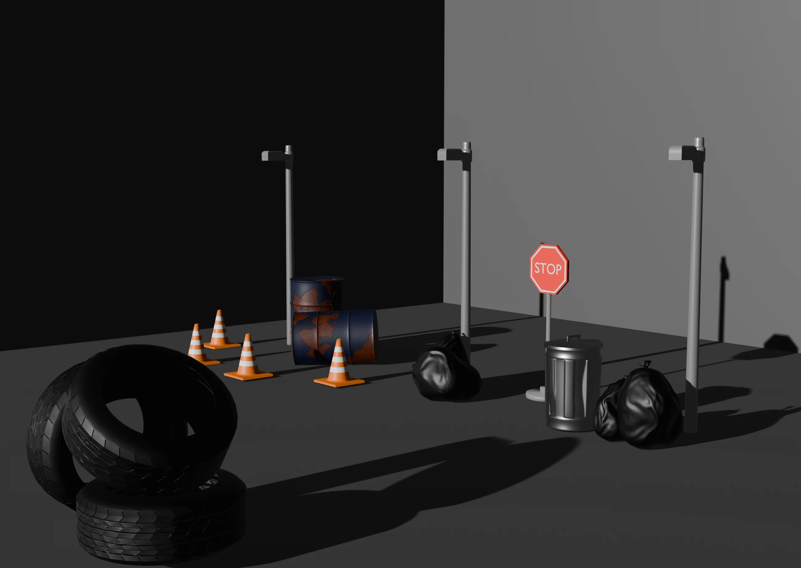

Selected work / 082025
Now Play This · Somerset House
Congruent Haven
A collaborative 2.5D game developed for Now Play This at Somerset House. Players collect hidden objects to progress through different levels, gradually transforming a broken world into an ethereal one. I proposed the concept, guided the team’s development and designed and modelled the hidden objects.

About the project
My contribution
- Proposed the game concept and visual direction.
- Designed and modelled the collectible objects in Blender.
- Guided the team through development towards the final game.
Focus & tools
Game concept · Art direction · Blender · Interactive design